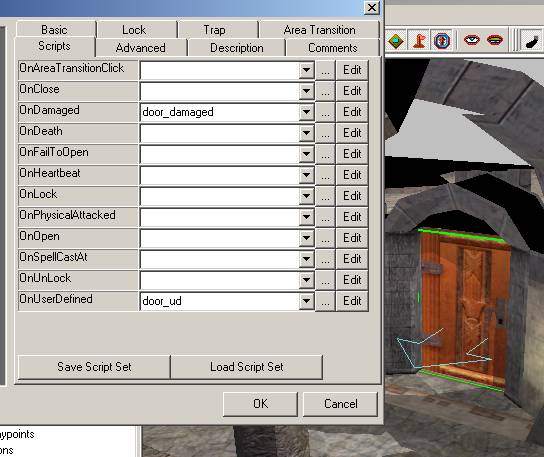
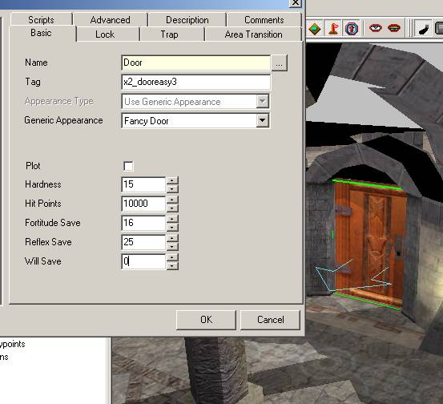

:: Module Building :: Respawning Doors ::
There is a very simple respawning door system included in PRC v2.3 or higher. It consists of two scripts,
door_damaged and door_ud. Simply put the door_ud script in a doors OnUserDefinedEvents script
slot, and put door_damaged in OnDamaged slot. See the picture below as an example

You also have to set the doors HP to a very high number, 1000 or higher. You should also set
the doors reflex saving throw to the real number of HP you want to door to have.
See the picture below as an example.

If you want the door to respawn after a certain time, enter the number of minutes into the
will save throw. Then once that time has elapsed, the door will respawn and will lock itself.
If you want to manually controll the door respawning, leave the will saving throw at zero.
Then when you want the door to respawn, use the SignalEvent command to send a User Defined event
number 500 to the door. You may want to refer to the lexicon for information about these commands.
If you manually respawn the door, it will not be automatically locked.
One note, if the door is trapped the trap will not respawn with the door. You may be able to use the
SetTrapDisabled command to renable the trap, however, if someone recovers the trap (as opposed to
disarming it) then SetTrapDisabled will no longer function on the door.
How it works.
This system uses local ints to track the HP damage done to the door. In the OnDamaged event
any real damage inflicted is restored with EffectHeal and the same amount removed from the virtual
damage. Once enough damage has been done to destroy the door, cutscene ghost and cutscene invisible
visual effects are applied to the door and it is opened. The shower of rubble obscures this change.
The door is also maked as plot to prevent further damage to it. Then when the door is respawned,
the effects are removed and the local ints are reset.